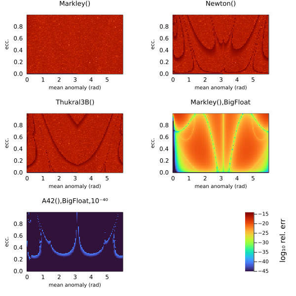

Kepler Solvers
The heart of this package is being able to take a set of Keplerian elements and output relative positions, velocities, etc.
This normaly requires solving Kepler's equation numerically. This package supports a multitude of solver algorithms that can be passed to orbitsolve:
The last of these RootsMethod, allows one to substitute any algorithm from the Roots.jl package. These include many different classical and modern root finding algorithms.chosen precision, including artibrary precision BigFloats. Using big floats with, for example, Roots.PlanetOrbits.Thukral5B and a tight tolerenace, allows you to solve orbits up to arbitrary precision.
The default choice is Auto, which currently selects Markley for all cases. The Markley algorithm is very fast, reasonably accurate, and always converges, making it a good default choice.
The Markley algorithm is a tweaked version of the algorithm from AstroLib.jl. It is non-iterative and converges with less than 1e-15 relative error across the full range of e between 0 and 1. On my laptop, this solves for a single eccentric anomaly in just 71 ns. Since it is implemented in pure Julia, there is no overhead from calling into a C or Cython compiled function and no need for vectorization.
Examples
using PlanetOrbits, BenchmarkTools
orb = orbit(a=1.2, e=0.1, M=1.0, ω=1.4, τ=0.5)
t = mjd("2025-06-23")
@benchmark orbitsolve(orb, t, PlanetOrbits.Markley())BenchmarkTools.Trial: 10000 samples with 636 evaluations.
Range (min … max): 192.042 ns … 17.489 μs ┊ GC (min … max): 0.00% … 98.81%
Time (median): 207.945 ns ┊ GC (median): 0.00%
Time (mean ± σ): 232.423 ns ± 403.026 ns ┊ GC (mean ± σ): 5.10% ± 2.95%
█▆▁▁ ▁▄▂ ▄▅▅▅▅▄▃▂▁ ▁▃▃▂▂▁ ▂
█████▆▅▇▆▅▅████▇▇▅▅▅▃▄▃▅▁▄▅▄▄▄▁▁▃▁▃▁▁▁▁▁▆██████████▆▆████████ █
192 ns Histogram: log(frequency) by time 264 ns <
Memory estimate: 128 bytes, allocs estimate: 1.@benchmark orbitsolve(orb, t, PlanetOrbits.Goat())BenchmarkTools.Trial: 10000 samples with 165 evaluations.
Range (min … max): 666.097 ns … 46.531 μs ┊ GC (min … max): 0.00% … 98.50%
Time (median): 716.733 ns ┊ GC (median): 0.00%
Time (mean ± σ): 718.132 ns ± 646.428 ns ┊ GC (mean ± σ): 1.27% ± 1.39%
▆█▄▂ ▁ ▆▇▅▅▆▄▄▄▃▁▁ ▂▂▁▂▂▁▁ ▂
████▇█▅▁▃▁▁▄▃▃▃▃████████████▆▅▅▅▄█████████▇▇▆▄▅▃▄▄▃▄▃▄▄▃▃▄▁▃▃ █
666 ns Histogram: log(frequency) by time 846 ns <
Memory estimate: 128 bytes, allocs estimate: 1.using Roots
@benchmark orbitsolve(orb, t, PlanetOrbits.RootsMethod(Roots.Newton()))BenchmarkTools.Trial: 10000 samples with 390 evaluations.
Range (min … max): 247.282 ns … 19.923 μs ┊ GC (min … max): 0.00% … 98.58%
Time (median): 298.753 ns ┊ GC (median): 0.00%
Time (mean ± σ): 291.543 ns ± 430.457 ns ┊ GC (mean ± σ): 3.30% ± 2.20%
█▆▂ ▁▄▁ ▁▃▃▅▆▅▆▅▄▄▂ ▁▂▂▂▂▁▁ ▂
████▇█▇▅▄▄▄▃▃▄▃███▇▇▆▆▅▄▁▄▄▁▃▄▄████████████▇▆▅▅▇▇█████████▆▆▅ █
247 ns Histogram: log(frequency) by time 340 ns <
Memory estimate: 128 bytes, allocs estimate: 1.using Roots
@benchmark orbitsolve(orb, t, PlanetOrbits.RootsMethod(Roots.Thukral3B()))BenchmarkTools.Trial: 10000 samples with 296 evaluations.
Range (min … max): 276.868 ns … 25.340 μs ┊ GC (min … max): 0.00% … 98.85%
Time (median): 323.698 ns ┊ GC (median): 0.00%
Time (mean ± σ): 320.340 ns ± 496.175 ns ┊ GC (mean ± σ): 3.09% ± 1.98%
█▄▁ ▄▁ ▅▅▆▆▄▂ ▁▂▂▁ ▂
███▆▄▄▄▃▆██▇▆▆███████▆▄██████▇▅▅▄▅▃▁▄▁▃▁▃▄▄▃▃▁▁▁▃▁▁▁▃▁▁▁▁▁▄▅▆ █
277 ns Histogram: log(frequency) by time 477 ns <
Memory estimate: 128 bytes, allocs estimate: 1.@benchmark orbitsolve(orb, t, PlanetOrbits.RootsMethod(Roots.A42()))BenchmarkTools.Trial: 10000 samples with 108 evaluations.
Range (min … max): 774.787 ns … 72.107 μs ┊ GC (min … max): 0.00% … 98.90%
Time (median): 825.713 ns ┊ GC (median): 0.00%
Time (mean ± σ): 832.283 ns ± 713.897 ns ┊ GC (mean ± σ): 0.86% ± 0.99%
▄█▇▂▂ ▆▇▆▃▃▄▇▇▅▃▄▄▅▄▃▂▂▁ ▁▂▂ ▁▂▂▁ ▃
██████▅▅▆▅▆▄▃▅▁▃▆██████████████████▆▇▇▆▅▄▅▅▃▃▅███████████████ █
775 ns Histogram: log(frequency) by time 936 ns <
Memory estimate: 128 bytes, allocs estimate: 1.@benchmark orbitsolve(orb, t, PlanetOrbits.RootsMethod(Roots.Bisection()))BenchmarkTools.Trial: 10000 samples with 10 evaluations.
Range (min … max): 1.301 μs … 5.109 μs ┊ GC (min … max): 0.00% … 0.00%
Time (median): 1.310 μs ┊ GC (median): 0.00%
Time (mean ± σ): 1.380 μs ± 153.724 ns ┊ GC (mean ± σ): 0.00% ± 0.00%
█▃ ▁▅▅▃▁ ▁ ▁
███▇▆█▆▄▁▁█████▆▇▇▆▇▇▇██▇▅▃▄▄▃▅▃▃▃▁▄▄▁▃▃▁▁▁▁▁▁▁▃▃▃▁▃▃▃▅▆▆▇▇ █
1.3 μs Histogram: log(frequency) by time 2.18 μs <
Memory estimate: 128 bytes, allocs estimate: 1.@benchmark orbitsolve(orb, t, PlanetOrbits.RootsMethod(Roots.SuperHalley()))BenchmarkTools.Trial: 10000 samples with 386 evaluations.
Range (min … max): 247.588 ns … 20.418 μs ┊ GC (min … max): 0.00% … 98.53%
Time (median): 298.396 ns ┊ GC (median): 0.00%
Time (mean ± σ): 291.474 ns ± 441.255 ns ┊ GC (mean ± σ): 3.38% ± 2.20%
▇█▄ ▃▄▁ ▄▄▆▇▆▆▅▃▂▁ ▂▃▂▂▁ ▂
████▇█▅▄▃▅▃▁▅▃███▇▇▆▆▅▅▁▃▃▃▁▅███████████▇▆▅▅▆████████▇▇▆▅▆▅▅▆ █
248 ns Histogram: log(frequency) by time 346 ns <
Memory estimate: 128 bytes, allocs estimate: 1.@benchmark orbitsolve(orb, t, PlanetOrbits.RootsMethod(Roots.Brent()))BenchmarkTools.Trial: 10000 samples with 194 evaluations.
Range (min … max): 494.273 ns … 40.562 μs ┊ GC (min … max): 0.00% … 98.69%
Time (median): 545.763 ns ┊ GC (median): 0.00%
Time (mean ± σ): 548.289 ns ± 683.079 ns ┊ GC (mean ± σ): 2.16% ± 1.71%
█
▅█▇▃▂▂▂▂▂▂▂▂▁▁▁▁▁▁▁▁▂▂▃▃▃▇█▅▄▆▇▅▄▄▃▃▂▂▂▂▂▂▂▁▂▂▂▂▂▂▂▂▂▃▂▂▂▂▂▂▂ ▃
494 ns Histogram: frequency by time 613 ns <
Memory estimate: 128 bytes, allocs estimate: 1.@benchmark orbitsolve(orb, t, PlanetOrbits.RootsMethod(Roots.Order2()))BenchmarkTools.Trial: 10000 samples with 238 evaluations.
Range (min … max): 315.630 ns … 32.839 μs ┊ GC (min … max): 0.00% … 98.89%
Time (median): 363.412 ns ┊ GC (median): 0.00%
Time (mean ± σ): 360.428 ns ± 555.807 ns ┊ GC (mean ± σ): 2.67% ± 1.71%
██▄▂ ▃▃▁ ▂▅▅▄▄▆▆▅▅▆▅▄▃▂▁ ▁▁▁▁▁▁▁ ▂
█████▇█▆▃▅▄▁▃▁▁▄▁▁▃▁▆███▇▇███████████████▇▆▆▅▄▃▅▆███████████▇ █
316 ns Histogram: log(frequency) by time 420 ns <
Memory estimate: 128 bytes, allocs estimate: 1.@benchmark orbitsolve(orb, t, PlanetOrbits.RootsMethod(Roots.AlefeldPotraShi()))BenchmarkTools.Trial: 10000 samples with 153 evaluations.
Range (min … max): 681.078 ns … 52.596 μs ┊ GC (min … max): 0.00% … 98.58%
Time (median): 734.706 ns ┊ GC (median): 0.00%
Time (mean ± σ): 729.649 ns ± 520.062 ns ┊ GC (mean ± σ): 0.71% ± 0.99%
▇█▄▄▁ ▃▄▃▁▂▆▇▆▄▄▅▆▄▃▃▂▁ ▁▂▂▁▁▁▂▁▁ ▂
█████▇▆▇▇▆▅▁▃▄▁▃▄▄▅██████████████████▇▇▆▅▅▅▅▃▇██▇███████████▇ █
681 ns Histogram: log(frequency) by time 812 ns <
Memory estimate: 128 bytes, allocs estimate: 1.High precision
You can solve Kepler's equation in high precision using big floats and tightening the tolerance on the solver.
orb_big = orbit(a=big(1.2), e=big(0.1), M=big(1.0), ω=big(1.4), τ=big(0.5))
sol = orbitsolve(orb_big, big(t), PlanetOrbits.RootsMethod(Roots.Thukral5B(),rtol=1e-30,atol=1e-30,))
radvel(sol)24650.95447361446997022436542900109713321175234563222583018047585031821959181256Comparison
